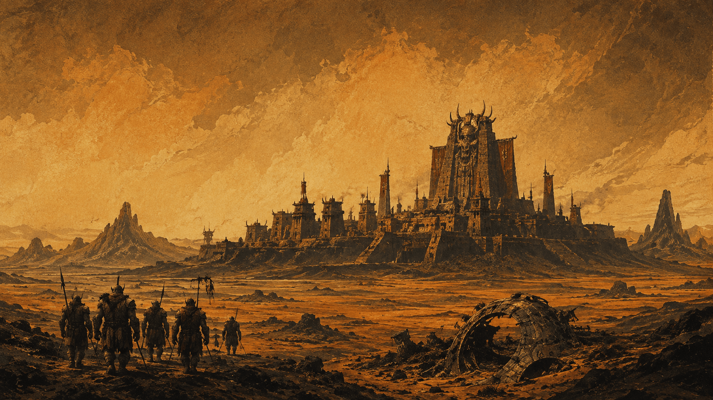

05 / 06 · Geschaffene · Kharn
Orks
Als Waffe erschaffen. Als Volk selbst definiert.
Übersicht
Geschaffen aus menschlichem Genpol, verstärkt mit Nyxaren-Technologie — eine gezielte Schöpfung des Imperiums, um die Lykaner-Rebellion niederzuschlagen. Ganz aufgegangen ist der Plan nicht. Die Rebellion wurde zwar niedergeschlagen, keine Frage. Aber die Orks selbst? Wurden zu weit mehr als der reinen Waffe, die man in ihnen sehen wollte.
Eine bittere Ironie steckt im Kern ihrer Erschaffung: Ein bereits unterworfenes Volk — die Menschen — wurde zum Rohstoff, um ein anderes unterdrücktes Volk — die Lykaner — zu brechen. Anders als geplant entwickelten die Orks erstaunlich schnell ein eigenes Bewusstsein. Reine Kriegsmaschinen aus Fleisch sind sie längst nicht mehr. Ein eigenständiges Volk mit eigener Kultur ist daraus geworden, ob das dem Imperium nun passt oder nicht.
Religion — der Weltenfresser
Die Orks glauben an ein ganzes Pantheon von Kriegsgöttern. Im Zentrum aber steht eine einzige, alles überragende Gestalt: der Weltenfresser. Erwacht ist er noch nicht — er schlummert, seit jeher, tief unter dem großen Tempel in der Hauptstadt. Keine Ursprungsgeschichte erzählt von einem Moment, in dem er bereits gewirkt hätte. Sein ganzes Wirken liegt in der Zukunft, noch unbeschrieben.
Was passiert, wenn er erwacht? Keine neutrale Reinigung der Galaxis von allem Schlechten, wie man vielleicht erwarten würde. Sondern gezielt: die Feinde der Orks auslöschen. Der Glaube ist damit weniger eine universelle Apokalypse als ein persönliches, kriegerisches Rachegelübde — eine göttliche Garantie, dass am Ende die Orks und ihre Sache triumphieren.
Die Fresserzungen — die Priesterschaft des Weltenfressers — deuten den Willen des schlummernden Gottes, hüten die Überlieferung. Und genießen erheblichen politischen Einfluss, größer, als ihre formale Stellung eigentlich vermuten lässt. Ganz bewusst unterscheiden die Orks zwischen dem großen, heiligen Krieg — dem noch bevorstehenden, endgültigen Kampf im Dienst des Weltenfressers — und gewöhnlichen, weltlichen Kämpfen im Auftrag des Dominat. Das tägliche Arena-Training ist die Vorbereitung auf ersteren: Jeder Kampf in der Arena, ein kleiner Übungsschritt hin zum großen Krieg. Ganz gleich, welche weltlichen Aufgaben ein Ork nebenbei erfüllt.
Gesellschaft & Alltag
Ein primitiv gehaltenes, kriegerisches Volk — bewusster Kontrast zur Hochtechnologie der Nyxaren und Prometheaner. Alles im Alltag der Orks ist auf den Krieg als spirituelles wie gesellschaftliches Zentralprinzip ausgerichtet, egal ob im Feld oder im Tempel.
Der Alltag hängt stark vom jeweiligen Klan ab: Landwirtschaft im Fruchtklan, Handwerk im Schmiedeklan, Handel und Diplomatie im Handelsklan. Was alle eint, unabhängig von der Klan-Zugehörigkeit: das Arena-Training, gemeinsamer Fixpunkt praktisch jedes Orks. Nach der Niederschlagung der Rebellion überließ das Imperium den Orks einen eigenen Planeten — Kharn, eine raue, unwirtliche Welt aus Steppen und Sandwüsten. Über die Jahre errichteten sie dort Tempel und entwickelten die Verehrung eigener Götter, aus dem Nichts heraus, ganz auf eigene Faust.
Militär
Militärisch sind die Orks das mit Abstand kampfstärkste Volk des Dominat — entsprechend häufig werden sie für das Imperium in Konflikte geschickt. Manche tragen diese Rolle mit Stolz. Andere mit stillem Unmut über die fortgesetzte Instrumentalisierung, denn ganz freiwillig ist das selten.
Offiziell freie Bürger des Imperiums, mit Sitz im Dominat seit 312 n.Z. — faktisch aber weiterhin militärisch instrumentalisiert, oft auf die Kriegerrolle reduziert, obwohl sie längst mehr sind. Ein starkes Thema für Charaktere dieses Volkes: Wer bin ich jenseits meines Zwecks, meiner Erschaffung, meines Rufs als „primitiver Krieger“?
Sprache & Namen
Bewusst einfach gehalten: kurze, harte Wörter, reduzierte Grammatik, direkte Subjekt-Verb-Objekt-Sätze. Kaum Füllwörter — wozu auch, wenn man sagen kann, was man meint, und fertig?
Titel entstehen durch simples Zusammensetzen, keine komplizierten Herkunftsformen: Boss — Anführer eines Klans oder einer Stadt. Megaboss — oberster Anführer aller Orks. Fresserzunge — Priester des Weltenfressers. Direkt, funktional, unmissverständlich.
Die vier Klans
Die Orks organisieren sich in vier Klans, jeder verkörpert durch eine eigene große Stadt auf Kharn mit klarer Spezialisierung. Über allen vier steht die Hauptstadt — neutraler, gemeinsamer Boden, den kein einzelner Klan für sich beansprucht. Dort erhebt sich der große Tempel des Weltenfressers, und jeder Klan unterhält dort einen eigenen Sitz samt eigenem Tempel. In der Hauptstadt leben auch die Priesterschaft und, mit seinem Rat, der Megaboss selbst.
Fruchtklan
Sitzt im einzigen wirklich fruchtbaren Gebiet des Planeten, zuständig für Landwirtschaft und Versorgung aller anderen Klans.
Kriegsklan
Herz der Kampfkultur, beherbergt die größten und berühmtesten Arenen Kharns.
Schmiedeklan
In den Gebirgs- und Minenregionen, verantwortlich für Waffen, Rüstungen und Ausrüstung aller Orks.
Handelsklan
An einer Oase bzw. wichtigen Karawanenroute gelegen, zentrale Anlaufstelle für Besucher von den umliegenden Planeten.
Schlüsselfigur: Okoth Knochenaufreißer, der Megaboss
Der Titel des Megaboss wird durch Kampf errungen. Jedes Jahr findet in der Hauptstadt ein großes Turnier statt, bei dem er offen herausgefordert werden kann. Der Megaboss gilt stets als der physisch mächtigste und stärkste Ork der Gegenwart — kein Erbtitel, keine Wahl, nur rohe Gewalt und die Fähigkeit, sie zu wiederholen.
Okoth hält den Titel seit rund zwei Jahrzehnten ununterbrochen — Turnier für Turnier ungeschlagen, ein lebender Beweis für Roheit und Ausdauer zugleich. Ein reiner Kampfkoloss, nicht sonderlich intelligent, ohne taktischen Scharfsinn oder verborgene Zweifel. Er ist genau das, was er zu sein scheint, nicht mehr und nicht weniger.
Eine entscheidende Eigenschaft besitzt er trotzdem jenseits roher Stärke: Er hört auf die Fresserzungen. Die eigentliche strategische Lenkung der Orks liegt damit weniger bei ihm selbst als bei der Priesterschaft, die ihn berät — ein interessanter Kontrast zu den Nyxaren, wo Religion eher Fassade für Malachais knallharte Berechnung ist. Bei den Orks ist es fast umgekehrt.
Blick nach außen
Terraner: Verachtung — als schwaches Volk angesehen, ungeachtet der eigenen Abstammung aus menschlichem Genpol. Ein Widerspruch, über den sich die wenigsten Orks Gedanken machen. Nyxaren: Gehorsam. Als Schöpfer akzeptiert und pflichtbewusst respektiert, auch wenn dieser Respekt nicht immer erwidert wird.
Lykaner: Kompliziert, historisch schwer belastet durch die Niederschlagung von deren Rebellion — Täter-Werkzeug auf der einen Seite, mit Raum für Schuld, Groll und möglicher Annäherung als ebenfalls unterdrücktes Volk auf der anderen. Aeldir: Gleichgültig bis leicht abwertend, ebenfalls als schwach angesehen — kein nennenswertes Interesse. Und Prometheaner? Misstrauen, schlicht und einfach, als unnatürliche, nicht-fleischliche Schöpfung abgelehnt.